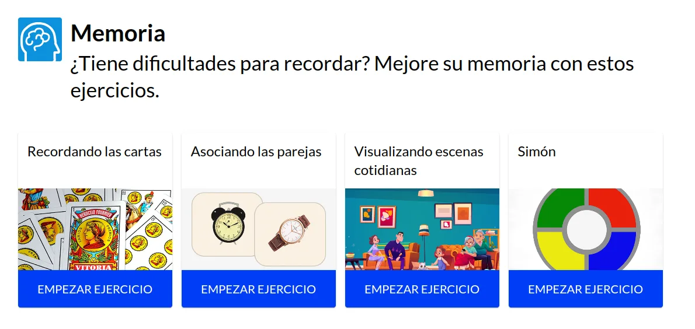
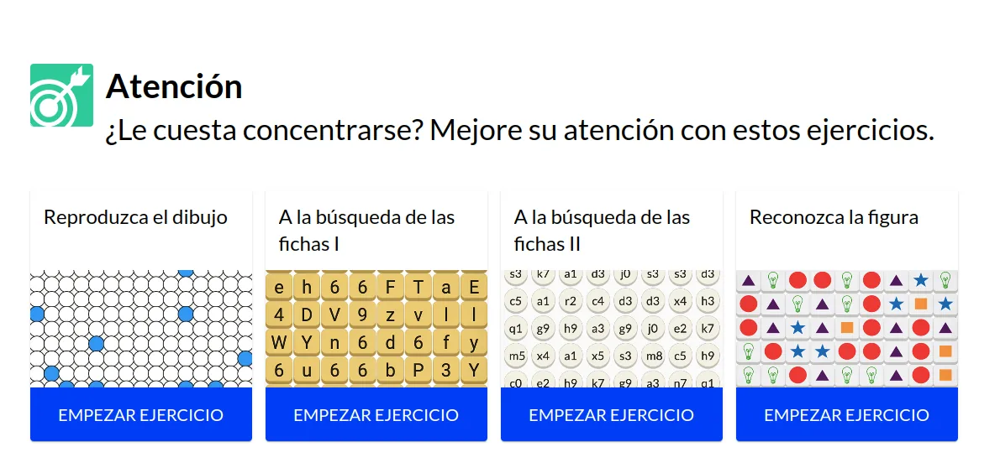

Plataforma de juegos cognitivos para el Ayuntamiento de Madrid
Migramos a HTML5 la plataforma de juegos cognitivos del Centro de Prevención del Deterioro Cognitivo del Ayuntamiento de Madrid, visitada por miles de personas de todo el mundo, y la ampliamos con planes personalizados, registro de usuarios y marcadores de deterioro cognitivo.
Hablemos de tu proyectoDe un vistazo
- Antes
Muy visitada, con tecnología obsoleta
Miles de personas de todo el mundo usaban la plataforma de juegos cognitivos, pero estaba construida con una tecnología obsoleta.
- Ahora
HTML5, con planes y seguimiento
Plataforma migrada a HTML5, con juegos cognitivos, planes personalizados, sistema de registro, medidas y marcadores para la detección del deterioro cognitivo.
- Resultado
- Tecnología actualplataforma migrada a HTML5
- Alcance internacionalmiles de personas usuarias
- En usoen el centro y en mejoralamemoria.es
Contexto
El Centro de Prevención del Deterioro Cognitivo del Ayuntamiento de Madrid contaba con una plataforma de juegos cognitivos basados en evidencia científica, visitada por miles de personas de forma internacional.
Entrenar la memoria y la atención de forma regular ayuda a mantener la actividad cognitiva, y una plataforma web permite hacerlo desde casa, a cualquier hora y sin desplazamientos.
Problema
La plataforma tenía una audiencia amplia y repartida por todo el mundo, pero estaba construida con una tecnología obsoleta.
Una tecnología en desuso es cada vez más difícil de mantener y de hacer evolucionar, y ponía en riesgo la continuidad de un servicio público con tanto alcance. Había que migrarla a una tecnología actual sin perder los juegos ni a las personas que ya los usaban.
Solución
Migramos la plataforma a HTML5, una tecnología actual y estándar de la web, y aprovechamos la migración para ampliarla.
Se implementaron los juegos cognitivos, planes personalizados de entrenamiento, un sistema de registro de personas usuarias, y medidas y marcadores para la detección del deterioro cognitivo. Así, además de jugar, el centro dispone de datos para hacer seguimiento de cada persona.
Es el tipo de trabajo que hacemos en software a medida e interfaces para mayores.


Resultados
La plataforma ya funciona con tecnología actual y sigue siendo accesible para el público internacional que la visitaba.
Se utiliza dentro de las instalaciones del centro y está disponible en línea en www.mejoralamemoria.es.
Otros casos de éxito
Empieza por una conversación de treinta minutos
Cuéntanos qué necesitas y te decimos honestamente si podemos ayudarte.